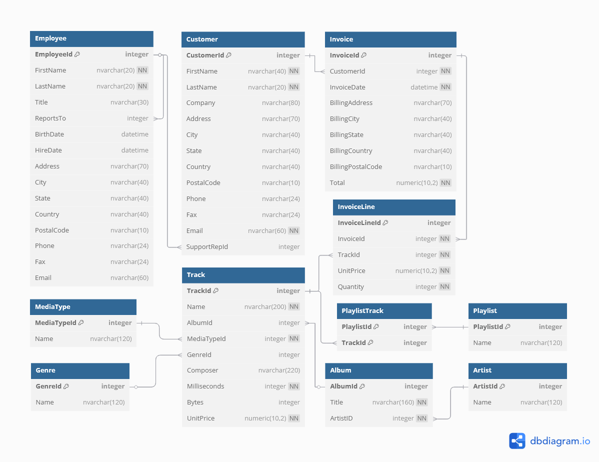

-- Get date range of Invoices
SELECT
MIN(i.InvoiceDate) as MinDate,
MAX(i.InvoiceDate) as MaxDate
FROM Invoice i;| MinDate | MaxDate |
|---|---|
| 2009-01-01 00:00:00 | 2013-12-22 00:00:00 |
Morrigan M.
June 26, 2025
June 26, 2025
The following tools were used to merge, analyze, and present the data:
| Tool | Purpose |
|---|---|
| SQL | Data transformation and KPIs |
| DuckDB | Lightweight, embedded relational database |
| R + Shiny | Dashboard development (R-based) |
| Python + Dash | Dashboard development (Python-based) |
The project demonstrates dashboard development using both R (Shiny) and Python (Dash) to showcase flexibility across ecosystems.
[NOTE TO SELF - DELETE ONCE REVISED: This is a work in progress. I plan to make a dashboard with R and one with Python, just to show I can do both. I will update this to reflect the final project once it’s done.]
This project is designed to help answer the following business questions:
The Chinook Database is a well documented, publicly available data set. The SQLite version of the data was downloaded and converted into a DuckDB database for this project to take advantage of DuckDB’s speed and in-memory querying capabilities.
The Chinook Database simulates a digital music store, similar to platforms like iTunes. It includes tables for artists, albums, tracks, customers, invoices, employees, and more.
A diagram of the database schema was created with dbdiagram.

From this schema, key tables of interest were identified for each business question:
Invoice, CustomerInvoice table records total sales and billing address information, which identifies where revenue is being billed geographically. Customer provides customer addressing, which may differ from billing location and allows for a more detailed geographic analysis.InvoiceLine, Track, Artist, GenreInvoiceLine records individual track purchases, including price and quantity. Joining to the Track table provides track-level metadata through further links to Artist and Genre, enabling revenue analysis by artist or genre.Invoice, CustomerCustomer table identifies each buyer, while Invoice records all purchase transactions. Counting invoices per customer reveals how many made repeat purchases, offering insight into customer retention.Invoice, InvoiceLineInvoice table includes invoice dates and total amounts, allowing for time-based trend analysis (e.g., monthly revenue). InvoiceLine can be joined for more granular insights, such as which tracks or genres are trending over specific time periods, or purchase volume trends.With the schema understood and key tables identified, the next step is to query the data using SQL to begin answering the business questions.
Initial exploration aimed to verify the expected data range and structure described in the documentation.
A query of date values in the InvoiceDate table confirmed that the data contained records with a date range from 2009-01-01 to 2013-12-22.
-- Get date range of Invoices
SELECT
MIN(i.InvoiceDate) as MinDate,
MAX(i.InvoiceDate) as MaxDate
FROM Invoice i;| MinDate | MaxDate |
|---|---|
| 2009-01-01 00:00:00 | 2013-12-22 00:00:00 |
As expected, InvoiceLine and Track had the highest number of unique records, reflecting their one-to-many relationships with Invoice and Album, respectively. Metadata tables such as Genre and MediaType had fewer unique values.
-- Get Number of Unique Key Values in Each Table
SELECT
'Employees' AS TableName,
COUNT(DISTINCT EmployeeId) AS UniqueKeys
FROM Employee
UNION ALL
SELECT
'Customers' AS TableName,
COUNT(DISTINCT Customerid) AS UniqueKeys
FROM Customer
UNION ALL
SELECT
'Invoices' AS TableName,
COUNT(DISTINCT InvoiceId) AS UniqueKeys
FROM Invoice
UNION ALL
SELECT
'Invoice Lines' AS TableName,
COUNT(DISTINCT InvoiceLineId) AS UniqueKeys
FROM InvoiceLine
UNION ALL
SELECT
'Tracks' AS TableName,
COUNT(DISTINCT TrackId) AS UniqueKeys
FROM Track
UNION ALL
SELECT
'Artists' AS TableName,
COUNT(DISTINCT ArtistId) AS UniqueKeys
FROM Artist
UNION ALL
SELECT
'Albums' AS TableName,
COUNT(DISTINCT AlbumId) AS UniqueKeys
FROM Album
UNION ALL
SELECT
'Genres' AS TableName,
COUNT(DISTINCT GenreId) AS UniqueKeys
FROM Genre
UNION ALL
SELECT
'Media Types' AS TableName,
COUNT(DISTINCT MediaTypeId) AS UniqueKeys
FROM MediaType
UNION ALL
SELECT
'Playlists' AS TableName,
COUNT(DISTINCT PlaylistId) AS UniqueKeys
FROM Playlist
ORDER BY UniqueKeys DESC;| TableName | UniqueKeys |
|---|---|
| Tracks | 3503 |
| Invoice Lines | 2240 |
| Invoices | 412 |
| Albums | 347 |
| Artists | 275 |
| Customers | 59 |
| Genres | 25 |
| Playlists | 18 |
| Employees | 8 |
| Media Types | 5 |
With structure confirmed, attention was turned towards the identified business questions.
Analysis of geographic revenue began with the country recorded in the Invoice table. This geographic value reflected where purchases were billed, which is often used as the default location reference for financial reporting.
-- Revenue by Country (Billing)
SELECT
i.BillingCountry,
SUM(i.Total) AS TotalRevenue,
ROUND(SUM(i.Total)*100.0 / (SELECT SUM(Total) from Invoice), 2) AS PercentGlobalRevenue,
COUNT(DISTINCT c.CustomerId) AS NumCustomers,
ROUND(SUM(i.Total) / COUNT(DISTINCT c.CustomerId), 2) AS RevenuePerCustomer
FROM Customer c
JOIN Invoice i on c.CustomerId == i.CustomerId
GROUP BY i.BillingCountry
-- Sort Revenue (Highest to Lowest)
ORDER BY NumCustomers DESC;| BillingCountry | TotalRevenue | PercentGlobalRevenue | NumCustomers | RevenuePerCustomer |
|---|---|---|---|---|
| USA | 523.06 | 22.46 | 13 | 40.24 |
| Canada | 303.96 | 13.05 | 8 | 37.99 |
| France | 195.10 | 8.38 | 5 | 39.02 |
| Brazil | 190.10 | 8.16 | 5 | 38.02 |
| Germany | 156.48 | 6.72 | 4 | 39.12 |
| United Kingdom | 112.86 | 4.85 | 3 | 37.62 |
| Czech Republic | 90.24 | 3.88 | 2 | 45.12 |
| India | 75.26 | 3.23 | 2 | 37.63 |
| Portugal | 77.24 | 3.32 | 2 | 38.62 |
| Belgium | 37.62 | 1.62 | 1 | 37.62 |
The customer base is geographically uneven:
Opportunity: Expanding to underrepresented regions could be a growth opportunity - if demand can be identified and activated.
There are different customer behavior patterns in each country.
Opportunities: High total revenue countries are ideal for retention and upselling strategies. High per-customer revenue countries are ideal for acquisition-focused campaigns.
However, the Customer table also contained a Country field. Differences between billing and customer country could reflect travel, gift purchases, or mismatched contact vs. billing addresses.
-- Total Revenue by Country (Customer)
SELECT
c.Country,
SUM(i.Total) AS TotalRevenue,
ROUND(SUM(i.Total)*100.0 / (SELECT SUM(Total) from Invoice), 2) AS PercentGlobalRevenue,
COUNT(DISTINCT c.CustomerId) AS NumCustomers,
ROUND(SUM(i.Total) / COUNT(DISTINCT c.CustomerId), 2) AS RevenuePerCustomer
FROM Customer c
JOIN Invoice i on c.CustomerId == i.CustomerId
GROUP BY c.Country
-- Sort Revenue (Highest to Lowest)
ORDER BY NumCustomers DESC;| Country | TotalRevenue | PercentGlobalRevenue | NumCustomers | RevenuePerCustomer |
|---|---|---|---|---|
| USA | 523.06 | 22.46 | 13 | 40.24 |
| Canada | 303.96 | 13.05 | 8 | 37.99 |
| France | 195.10 | 8.38 | 5 | 39.02 |
| Brazil | 190.10 | 8.16 | 5 | 38.02 |
| Germany | 156.48 | 6.72 | 4 | 39.12 |
| United Kingdom | 112.86 | 4.85 | 3 | 37.62 |
| India | 75.26 | 3.23 | 2 | 37.63 |
| Portugal | 77.24 | 3.32 | 2 | 38.62 |
| Czech Republic | 90.24 | 3.88 | 2 | 45.12 |
| Chile | 46.62 | 2.00 | 1 | 46.62 |
To identify any countries with mismatched revenue attribution, the aggregated views were joined and compared.
-- Rows with discrepancies in Revenue by Country
-- (Billing vs Customer)
-- Revenue by Invoice.BillingCountry
WITH billing_country_revenue AS (
SELECT
BillingCountry AS Country,
SUM(Total) AS Revenue_Billing
FROM Invoice
GROUP BY BillingCountry
),
-- Revenue by Customer Country (joined from Invoice.Customer)
customer_country_revenue AS (
SELECT
c.Country AS Country,
SUM(i.Total) AS Revenue_Customer
FROM Invoice i
JOIN Customer c ON i.CustomerId = c.CustomerId
GROUP BY c.Country
)
-- Join the aggregations into a single table (by Country)
SELECT
COALESCE(b.Country, c.Country) AS Country,
b.Revenue_Billing,
c.Revenue_Customer
FROM billing_country_revenue b
FULL OUTER JOIN customer_country_revenue c
ON b.Country = c.Country
-- Select only rows where revenue differs by country source
WHERE
b.Revenue_Billing IS DISTINCT FROM c.Revenue_Customer
ORDER BY Country;| Country | Revenue_Billing | Revenue_Customer |
|---|
Billing and customer country match exactly in this data set, indicating no divergence due to travel, gifting, or alternate addresses. This simplifies location-based analysis but may also reflect a limitation in the data set’s realism.
InvoiceLine, Track, Artist, GenreInvoiceLine provides data relating to individual unit sales. Links between Track, Artist, and Genre provide additional details, such as artist name and genre, characterizing these unit sales.Invoice, Customer, InvoiceLineCustomer provides key customer data. Links to Invoice provide sales frequency information linked to each Customer, which may be further broken down to individual units or cost-per-unit with links to InvoiceLine.Invoice, InvoiceLine, CustomerInvoice provides sales data, including date of sale and revenue. This data may be further broken down to individual units or cost-per-unit with links to InvoiceLine. Further characterization may be done with links to Customer or other tables linked to InvoiceLine.